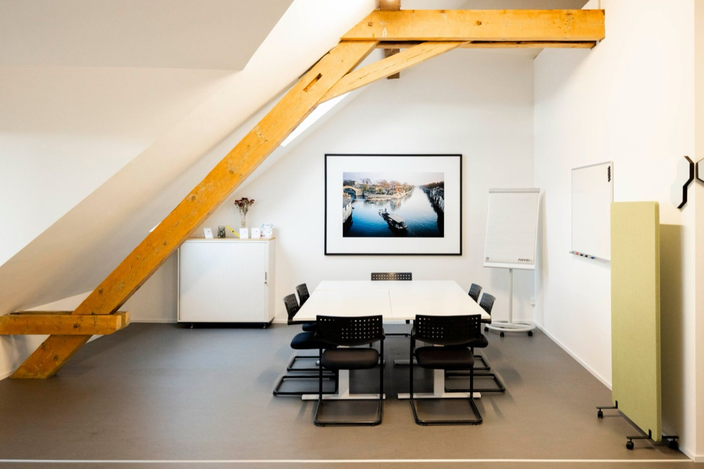
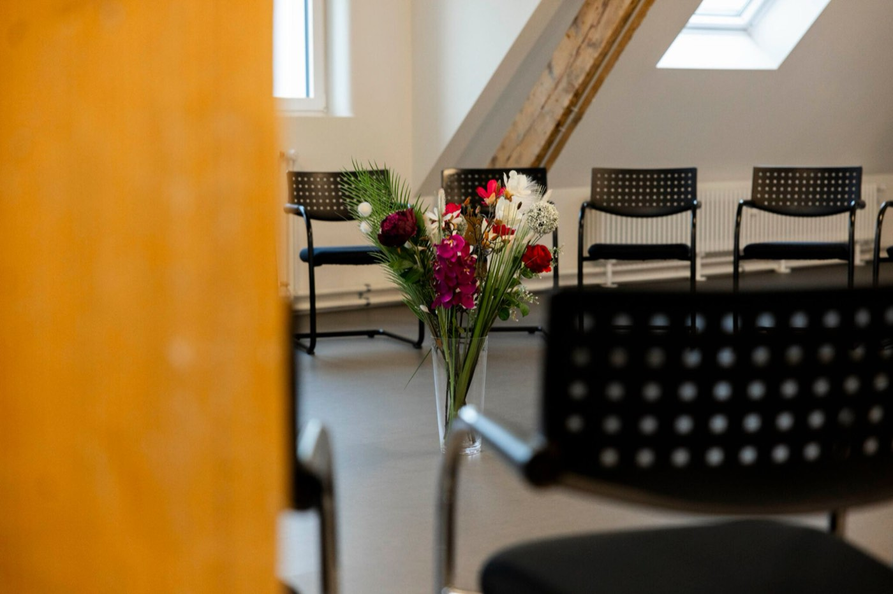
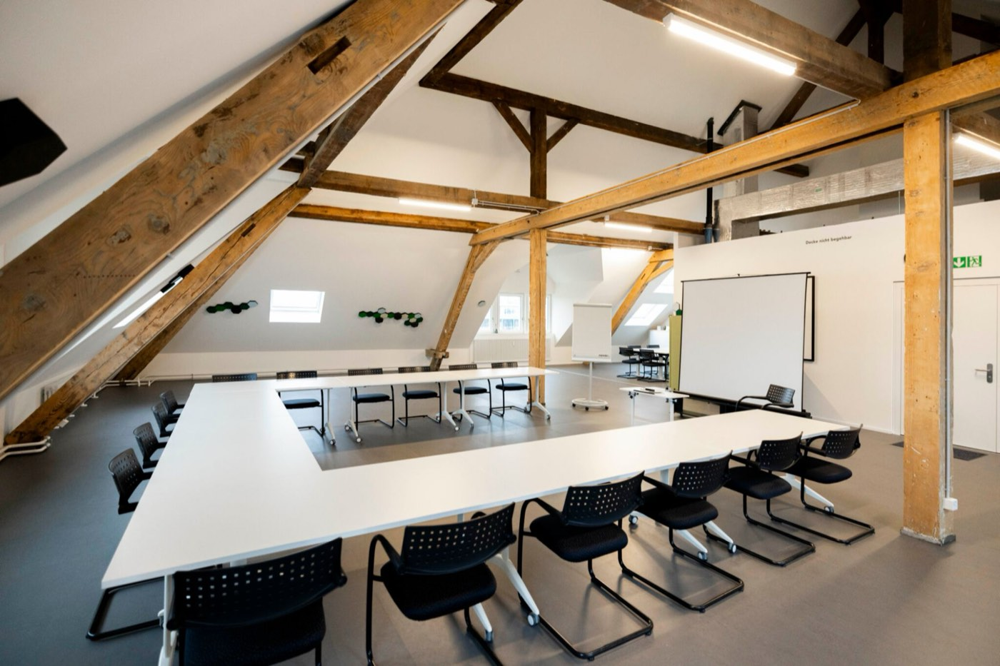

Teamsupervision
Für Teams in Wohngruppen und stationären Einrichtungen: herausfordernde Situationen gemeinsam verstehen, die Zusammenarbeit stärken und Entlastung finden.
Supervision und Coaching für die Soziale Arbeit
Herausforderndes Verhalten fordert auch Teams heraus. Ich begleite Fachkräfte und Leitungen in der Jugendhilfe dabei, schwierige Situationen zu verstehen, Belastungen zu teilen und handlungsfähig zu bleiben.
In Freiburg im Breisgau und Basel
Kontakt aufnehmenFür Teams in Wohngruppen und stationären Einrichtungen: herausfordernde Situationen gemeinsam verstehen, die Zusammenarbeit stärken und Entlastung finden.
Raum für Ihre beruflichen Fragen: belastende Erlebnisse, Ihr eigenes Handeln und Ihre Rolle im Team.
Für Leitungskräfte zwischen Team, Organisation und Alltag: Führungsfragen reflektieren und Entscheidungen klären.
Für Fach- und Leitungskräfte in der Sozialen Arbeit, zum Beispiel beim Einstieg in eine Leitungsrolle oder in der Praxisanleitung und Einarbeitung neuer Mitarbeitender.
Mein Schwerpunkt ist die Arbeit mit Jugendlichen und jungen Erwachsenen im Heimkontext, die herausforderndes Verhalten zeigen. Ich begleite Prozesse und bringe dort, wo es hilft, auch Fachwissen aus der Praxis ein, etwa aus der Traumapädagogik.
In Basel arbeite ich in hellen Räumen unter dem Dach: ein Raum für kleinere Gruppen und Einzelgespräche und ein grosser Seminarraum für Teams. In Freiburg im Breisgau treffen wir uns nach Absprache.



Meine Arbeit ist von einer traumapädagogischen Grundhaltung geprägt.
Ich bin seit 2020 in einer Einrichtung der Jugendhilfe in Basel tätig, heute als Stationsleiter im betreuten Wohnen. Den Alltag mit Jugendlichen und jungen Erwachsenen, die herausforderndes Verhalten zeigen, kenne ich aus eigener Erfahrung, ebenso die Fragen, die Teams und Leitungen dabei beschäftigen.
Zurzeit bin ich Supervisor und Coach in Ausbildung.
Ich freue mich auf Ihre Nachricht, ob für ein erstes Gespräch oder eine Frage zu meinem Angebot.